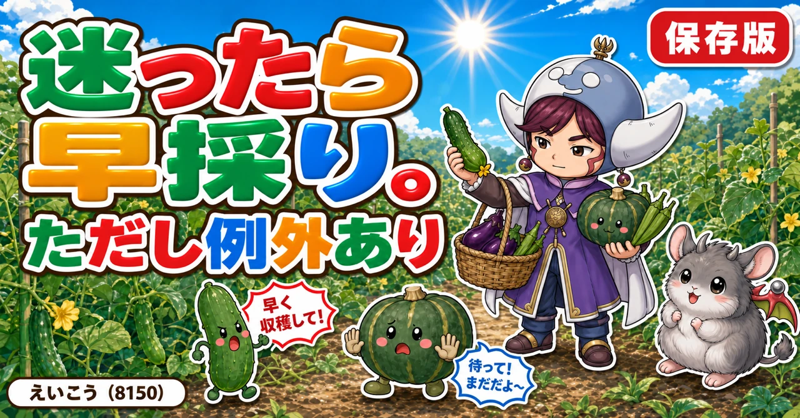
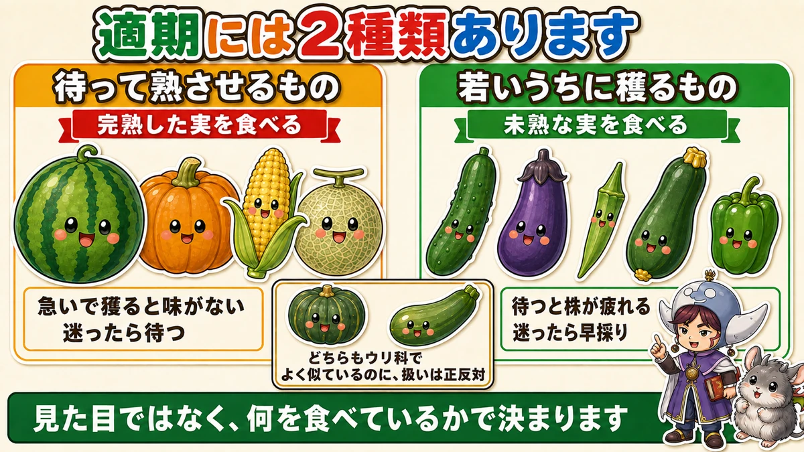
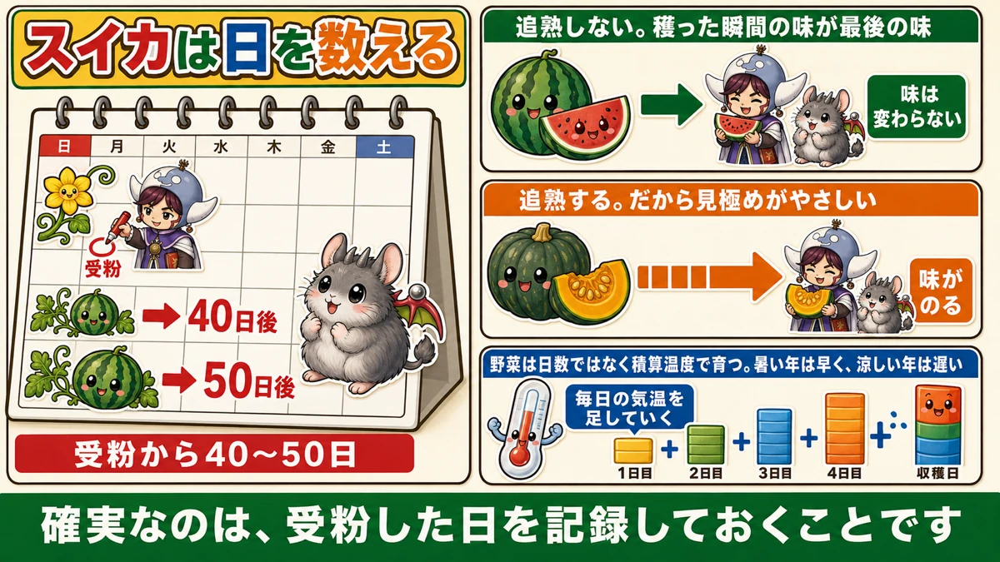
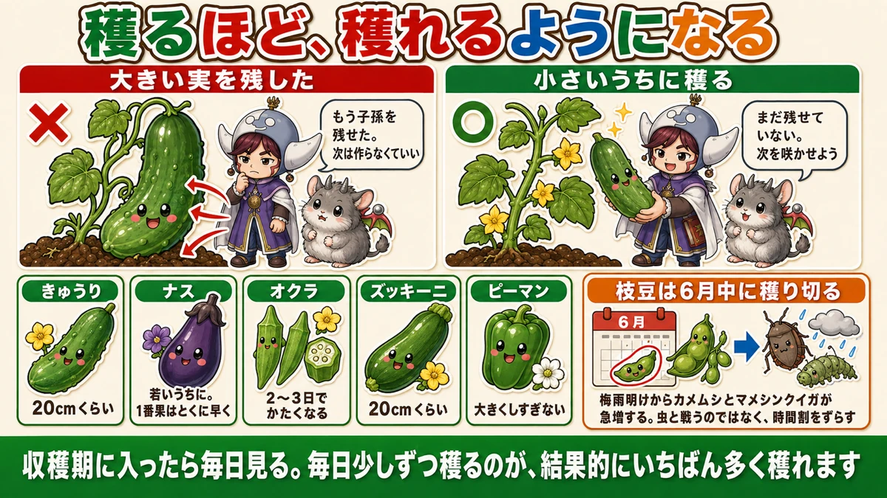
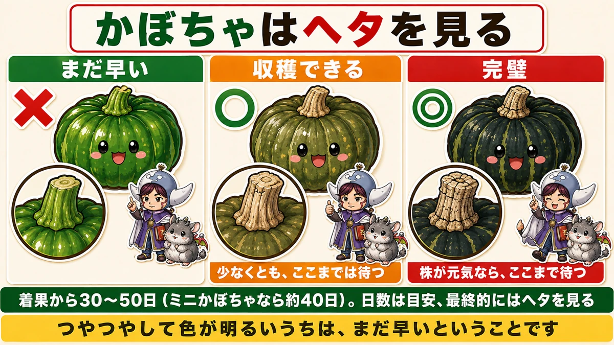

野菜の収穫時期を見極める｜日数・実物・保存目的で選ぶ判断ガイド

どうも、8150（えいこう）です🌱 家庭菜園歴8年、理科の教員免許を持っていて、有機・無農薬で野菜を育てています。
この記事で分かること
- 収穫日は、日数だけで確定せず『食べる部分の状態』『株の元気』『次に見に来られる日』を合わせて決めます。
- きゅうりやオクラは若い実を食べる野菜。かぼちゃやスイカとは、待ち方が違います。
- 枝豆ととうもろこしは、実ができたあとにも食べ頃を通り過ぎます。「もっと待てば甘くなる」と考え続けないことが大切です。
- 土の中の作物は、葉の色に加えて試し掘りで確認。葉だけから中身を決めつけません。
- すぐ食べる収穫と、保存する収穫は目的が違います。掘ったあとの乾燥や置き場所まで準備します。
- 説明によって日数やサイズが違うときは、品種・数え始める日・食べ方を比べます。
野菜が大きくなると、なんか「もうちょい待てば、もっとお得やな」と思いたくなりますよね。でも収穫は、大きさの競争ではありません。いま食べたい状態になっているか。その実を残して、ほかの実や株に無理をさせていないか。この二つを見ると、判断がすっきりします。
このページでは、野菜別のサインから、実際に採るまでの順番を整理します。畑で迷っているみなさんは、まず早見から作物名を探してください。日付は合っているのに見た目が違う場合は『失敗の見分け方』へ。違う説明を見て混乱したときは『説明が分かれていること』に戻れば大丈夫です☺️
なお、同じ野菜でも、すべての品種が同じ長さ、同じ日数で食べ頃になるわけではありません。ミニきゅうりを普通のきゅうりの長さまで待つような使い方は避けてください。目安の数字を知ったら、最後に目の前の野菜を見る。ここまでが収穫の判断です。
早見：野菜別の収穫サインと数字
最初に、収穫の判断を四つに分ける
- 若い実を採る：きゅうり、なす、緑のピーマン、オクラ。サイズと食べやすさを見て、育ちすぎる前に採ります。
- 実の成熟を確かめる：かぼちゃ、スイカ。受粉や開花の記録と外観を組み合わせます。
- 実や種の食べ頃を選ぶ：枝豆、とうもろこし、落花生。それぞれ、さや、ひげ、試し掘りが手がかりになります。
- 葉や地下部分を採る：葉物、大根、じゃがいも、玉ねぎ、にんにく。食べる大きさに加え、残して育てるか、保存するかを決めます。
この分け方は、調べる入口です。植物としての厳密な成熟段階を四つに定義するものではありません。例えば、とうもろこしを『熟すまで待つ野菜』だけに入れると、待ちすぎて食べ頃を逃す説明が抜けてしまいます。作物名に戻って、個別のサインを確認しましょう。

図の二分類は、若い実を採る野菜と、成熟を確かめて採る野菜の違いをつかむために使えます。葉物や地下の作物、枝豆などは、このページの個別の目安も合わせてください。
若い実を採る野菜の早見
- きゅうり：一般的な長さのタイプでは18〜20cmという目安と、20〜22cm程度という目安があります。次の訪問まで間があくなら、収穫できる大きさの実を少し小さめに採る考え方です。
- なす：普通の長なすなどをすべて同じ長さにそろえる基準は置きません。品種の収穫サイズを確認し、育ち盛りの夏は通常より一回り小さめに採る方法があります。ごく小さな実まで一律に採る意味ではありません。
- 緑のピーマン：5〜7cmを目安にする説明と、5〜6cmほどで採る栽培例があります。大きくしすぎず、株への負担を抑える考え方です。大型品種にそのまま当てはめません。
- オクラ：開花後5〜7日ほどが一つの目安。柔らかさを重視するなら6〜7cm、別の栽培例では8〜10cmほどです。6〜8cmという説明もあり、品種と用途で判断が変わります。
- オクラの確認頻度：旺盛に育つ時期には朝と夕方に見る方法があります。全期間に同じ頻度を義務づける話ではなく、伸び方に合わせます。
- パプリカ：緑のピーマンと同じ若採りだけでは整理できません。色づかせて収穫する目的なら、まず株を育てることと、実を熟させることを分けて考えます。
数字は、採る候補を探すためのものです。長さだけを合わせても、品種や硬さが違えば食べ心地は変わります。柔らかさを求めるオクラと、ある程度の大きさを求める収穫では、選ぶ位置が違うんですよね。
かぼちゃ・スイカの日数と外観
- 西洋かぼちゃ：受粉後約40〜50日の説明があります。ヘタのコルク状の変化、割れ方、皮のつや、葉の状態も見ます。
- 日本かぼちゃ：受粉後約30〜40日という目安があります。西洋かぼちゃの日数を、そのまま移しません。
- ミニかぼちゃ：受粉後約30〜35日という説明と、約35〜40日という例があります。開花後30〜40日とする説明もあり、品種と起点をそろえる必要があります。
- かぼちゃの種まきからの期間：約90〜120日という説明があります。受粉後の日数とは別の時計です。
- 小玉スイカ：受粉後約30〜40日、または約35〜40日の説明があります。暖かさや品種で変わるため、日数だけで切りません。
- 大玉スイカ：受粉後約40〜50日が目安の一つ。巻きひげ、実の模様、肩やお尻の外観、株の状態を合わせます。
- スイカの温度を使った目安：約1000という積算の説明と、1200という説明があります。平均気温25℃が続く計算例でも40日と48日に分かれるため、共通の収穫公式にはしません。
日数の幅があるのは、全部が曖昧だからという意味ではありません。別の品種、別の天候、別の食べ方を一緒に見ると幅が出ます。手元の品種の説明が分かる場合は、そこから確認を始めてください。
さや・ひげ・土の中を確認する野菜
- 枝豆：さやが食べたい大きさに膨らんだところで収穫。薄いままでは食べる量が少なく、膨らみすぎると硬さや甘さの低下が問題になります。
- とうもろこし：ひげが茶色く枯れた状態を目安にし、さらに黒ずむまで放置しません。収穫が遅れると味が落ち、食害を受ける機会も増えます。
- じゃがいも：種いもを植えて約100日が目安の一つ。茎葉の黄化と試し掘りを合わせ、すぐ食べるか保存するかでも採る時期を調整します。
- 玉ねぎ：全体の約8割の葉が倒れたころにまとめて採る方法と、倒れた株から順番に採る方法があります。保存を意識して、倒れたあと約1週間待つ説明もあります。
- にんにく：葉の3〜5割ほどが黄ばんだ状態を目安にする説明があります。試し掘りで玉の状態を確認し、晴天が続いて土が乾いた条件での本収穫を考えます。
- 落花生：種まきから約135日前後という目安があります。地域や品種で変わり、葉がすべて黄色くなるまで待たず、下葉が枯れ始めたら試し掘りします。
- 大根：畑で長く保てるかは品種と気温によります。暖かい冬に肥大が続けば、割れやすが入る問題があるため、冬だから放置できるとは考えません。
- 葉物：株ごと採るタイプと、葉やわき芽を繰り返し採るタイプがあります。収穫できる高さだけでなく、どこを残すかも確認します。
この回では、栽培条件の数字を足さない
収穫タイミングは、いろいろな作物にまたがるテーマです。種まき時期、株間、うね幅、元肥、追肥、連作の間隔を、全野菜共通の一つの数字にはできません。この早見は収穫の判断に絞っています。植え方や施肥の計画は、育てる作物の品種表示や栽培記事で確認してください。
特に『種まきから』『植え付けから』『開花から』『受粉から』を混ぜないこと。記録に数字だけを書くより、「受粉から35日」のように起点まで残す方が、あとで迷いにくくなります。
作業の手順（時期の順）
1．収穫前に、目的と記録をそろえる
- 『今日から食べる』『順番に食べる』『乾かして保存する』のどれを目指すか決めます。
- 品種名と、収穫サイズや成熟日数の表示を確認します。
- 種まき日、植え付け日、開花日、受粉日を、分かる範囲で区別して残します。
- 次に畑へ行ける日と、収穫予定の前後の天気を確認します。
- 持ち帰ったあとに広げる場所、乾かす場所、早く食べる分の置き場所を用意します。
『保存するつもりだったけど、置く場所がない』となると、収穫した時点で次の作業が詰まります。にんにくなら、湿気がこもる袋へまとめる前に、風が通る場所を確保。かぼちゃなら、雨や地面の湿り気を避ける置き方を考えます。採る前に場所を見ておくと、作業がつながります。
記録の形式は自由です。例えば『小玉スイカ／受粉した日／実の位置／確認した日／巻きひげの様子』がそろえば、日付だけのメモより使いやすくなります。品種名が不明なときは、不明のまま残してください。あとから都合のよい品種の数字を当てはめない方が、判断を間違えにくいです。
2．開花・受粉の段階で、実と日付を対応させる
- 受粉した花を確認し、その日を記録します。
- 実が育つ場所に目印を付け、日付のメモと対応させます。
- 別の日に受粉した実は、別の記録にします。
- 収穫の目安が近づいたら、日付に外観の観察を加えます。
かぼちゃやスイカでは、つると葉の下に実が隠れます。日付だけ分かっていても、どの実の日付なのか分からなければ使えません。『この実の受粉日』まで結びつけるのがポイントです。記録は立派なノートでなくてもOK。実を見失わない目印と、読める日付があれば始められます。
自然に受粉した実は、正確な受粉日が分からないこともあります。その場合、見つけた日を受粉日として扱わないでください。『実を見つけた日』と書いて、外観を中心に確認します。分からない日付を埋めるより、何が分かっているかをはっきりさせる方が役に立つんですよね。

3．若い実は、次の訪問までの成長も考える
- 葉の陰も見て、収穫できる大きさの実を探します。
- 品種に合うサイズか、育ちすぎていないかを確認します。
- 今日採る実と、まだ残す実を分けます。
- 数日見に来られないなら、すでに食べられる実をやや小さめに採る選択をします。
- 収穫後、残っている大きな実をもう一度探します。
きゅうりの実を一つ見つけたら、そこで終わりにしないこと。葉の陰に大きな実が残っていると、その実も養分を使い続けます。『表から見えた実だけ採った』と『収穫できる実を確認した』は、作業として少し違います。
なすの早採りも、実がごく小さいうちに何でも切る方法ではありません。通常の収穫サイズを知ってから、夏の旺盛な時期には一回り小さく採る、と考えます。丸なすと長なすを同じ長さにそろえるような使い方はしません。
オクラは、日数より実の伸び方が先に進むことがあります。収穫の始まりと盛夏のピークで、確認する間隔を変えてください。柔らかいものを食べたいなら、6〜7cmほどで採る方法があります。朝は残した実が夕方には候補になる時期なら、朝夕の確認を検討します。毎日一回で十分な時期まで、同じ忙しさにしなくて大丈夫です。

4．かぼちゃは、ヘタだけでなく葉と実も見る
- 品種に合う受粉後の日数が近づいているか確認します。
- ヘタが青々とした状態から、コルクのような状態へ変わっているか見ます。
- 縦の割れ、横の割れ、皮のつやなど、外観の変化を確かめます。
- 葉が残っているか、実が強い日差しを受けていないか調べます。
- 食べたい食感と、追熟・保存の計画に合わせて収穫段階を選びます。
ヘタの割れは、実の表面が裂けることとは別です。ここで見るのは、つると実をつなぐヘタの変化。果肉まで傷んでいる実を『熟したサイン』として扱わないでください。
株が元気で、よりホクホクした状態を目指す説明では、ヘタの横方向の割れまで待つ方法があります。一方で、コルク化が進み、少し青みが残る段階で採って追熟する説明もあります。この違いは後ろの章で整理します。
葉が枯れて実が露出し、日焼けの心配がある場合は、理想のヘタになるまで待ち続ける方法が合わないことがあります。収穫できる段階に来ているかを確認し、早めに採って追熟する選択を考えます。葉がなくなったこと自体を、甘さの完成の証拠にはしません。

5．スイカは、日数と複数のサインを照合する
- 記録した受粉日から、品種に合う目安の日数を数えます。
- 実の近くの巻きひげの状態を確認します。
- 実の模様、肩、お尻などの外観も合わせて見ます。
- 葉やつるが病気や衰弱で枯れていないか調べます。
- 音を使うなら、熟す前から同じ実で比べてきた変化を参考にします。
巻きひげが枯れていると、すぐ採りたくなります。でも、株が弱って枯れた可能性もあります。受粉からの日数がまだ短く、ほかの葉も急に傷んでいるなら、巻きひげだけで結論を出さないでください。
音の判断は、初めて一回叩くだけでは比較の相手がありません。収穫前から同じ実を見て、音や外観がどう変わったかを比べる方法があります。音が分からない場合は、分からないままで大丈夫。無理に『これは熟した音や』と決めず、記録と外観へ戻りましょう。
スイカには、採ったあとに甘くなることを期待して早く切る方法は向きません。かぼちゃの追熟の話をそのまま使わず、畑にある間に食べ頃を確かめます。ただし、待ちすぎて割れる問題もあるので、日数を過ぎた実を放置し続けないことが大切です。
6．枝豆は、順次収穫か一斉収穫かを選ぶ
- さやの膨らみを見て、薄いもの、食べ頃のもの、膨らみすぎたものを区別します。
- 食べ頃のさやだけを選ぶなら、株を残して順番に採ります。
- 手間をまとめたいなら、全体のさやがある程度そろった時点で株ごと収穫します。
- 一斉収穫では、未熟なさやや進みすぎたさやが混じることを見込んで選別します。
- 採った分を食べる段取りまでつなげます。
同じ株でも、全部のさやが同じ日にちょうどよくなるとは限りません。食べ頃を細かく選びたい人と、一度に作業を終えたい人では、合う方法が違います。どちらか一方を正解にするより、みなさんが続けられる方法を選ぶ方がよさそうです。
早まきで害虫が増える時期を避ける計画は、栽培を始める前の話です。いま目の前にあるさやの収穫判断は、膨らみを見ます。『6月中に収穫する作型がある』という説明を、全国の枝豆をその月に全部抜くルールにしないでください。
7．地下の作物は、代表の株を試し掘りする
- 植え付けからの期間と、葉の黄化や枯れ方を確認します。
- 試し掘りする株を決め、地下の実物を見ます。
- 大きさ、割れ、未熟なものの割合などを確認します。
- すぐ食べる分だけ採るか、全体の収穫に進むか判断します。
- 本収穫は天気と土の乾き具合を確認して行います。
じゃがいもは、緑の葉が残っていても食べるための収穫ができる場合があります。ただ、若い皮の状態と、長く保存しやすい状態は同じではありません。早く食べたいなら大きさを試し掘りで確かめ、保存したいなら茎葉の変化も判断に入れます。
すでに大きないもができているなら、葉が完全に枯れるのを待つ間に割れる可能性があります。『葉が枯れるまで待つ』を単独の規則にしないこと。暑い時期には、地温が高い栽培条件でいもが傷む心配もあるため、地下の状態を確かめる意味が増します。
落花生は、葉が全面的に黄色くなるまで待たず、黄ばんだ葉が見え始め、下葉が枯れてきた段階で試し掘りします。さやの網目がはっきりしたものが全体の約8割という判断例があります。早すぎれば未熟なさやが多く、遅ければ掘るときにさやが外れて土に残りやすくなります。
にんにくも、葉の色と玉の状態を組み合わせます。花やとうを取ったあと何日という説明には幅があるので、それだけで全株を掘りません。試し掘りした結果と、晴天が続く見込みを合わせて本収穫へ進みます。
8．葉物は、残す部分を決めてから切る
- 株ごと収穫するタイプか、摘み取りを繰り返すタイプか確認します。
- 外側の葉を採る方法なら、中心の育つ部分を残します。
- 摘み取り型の春菊なら、下の葉と、次に伸びるわき芽を残す位置を確認します。
- 収穫後に新しい葉や芽が伸びているかを見ます。
『根ごと抜く』『地際で全部切る』『葉を残す』は、そのあとにできる作業が違います。もう一度採りたいなら、最初の収穫で残す場所を考える必要があります。すべての葉物が同じ切り方で再生するわけではないので、作物とタイプを確認してください。
摘み取り型の春菊では、本葉が約10枚、草丈約25cmを最初の収穫の目安とする説明があります。これは株ごと収穫するタイプまで含めた基準ではありません。高さだけを見て切るより、葉とわき芽の位置を見る方が次の収穫につながります。
9．収穫後の処理までを一つの作業にする
- 採ったものを確認し、傷や割れのあるものを分けます。
- すぐ食べるものと、乾燥・保存に回すものを分けます。
- 乾燥が必要なものは、雨を避け、空気が通る場所へ広げます。
- 湿ったものを密閉して積み上げず、置き場所の湿り気を確認します。
- 食べた状態や保存中の変化を記録し、次の収穫判断に使います。
にんにくを保存する際は、泥を水で洗い落としてから湿ったまま袋へ入れる扱いを避けます。かぼちゃも、収穫後に雨や地面の湿り気に当て続けないようにします。『採れた！』で終わらず、持ち帰った先まで見ておきましょう。
とうもろこしは、収穫した日に食べる段取りを組むと、収穫直後の味を楽しみやすくなります。乾かして保存するにんにくとは、採ったあとの優先作業が違います。どの野菜も同じ箱にまとめて置くより、食べ方ごとに分ける方が扱いやすいです。
失敗の見分け方（症状→原因→やること）
日数は過ぎたのに、実が食べ頃に見えない
- 症状：目安の日を迎えたのに、かぼちゃのヘタが青い、スイカの外観がまだ変わらない。
- 考えられる原因：品種の目安が違う、気温の条件が違う、起算日を取り違えた、別の実の日付を見ている。
- やること：記録の起点と実の対応を確認し、外観の変化を追います。別品種の数字に合わせて切りません。
まず『何日目か』の前に、『何から数えたか』を見直してください。かぼちゃの種まきからの90〜120日と、受粉からの40〜50日は、同じものを数えていません。植えた日と受粉した日が入れ替わると、現物とのずれが大きくなります。
日付が合っているなら、目安と違うことだけを失敗にしないで大丈夫です。日数は確認を始める合図。実の様子までそろって初めて、収穫の候補になります。
きゅうりが太くなり、皮や種が気になる
- 症状：葉の陰に残した実が大きくなり、いつもの食べ心地と違う。
- 考えられる原因：収穫できる実の見落とし、訪問間隔に対して成長が速かった。
- やること：育ちすぎた実を株に残し続けず、ほかに隠れた実がないか確認。次回は採れる実をやや小さめに選ぶ方法を検討します。
大きくなったきゅうりを『もう食べられない』とサイズだけで決める必要はありません。皮や種を除いて調理する方法もあります。いつもの若いきゅうりと同じ食感ではないことと、食べられないことは分けましょう。
ただし、食べ方を考えるために株へ残しておく必要はありません。収穫してから扱いを考え、次の実へ目を向けます。『大きな実をどうするか』と『これからの収穫をどう守るか』を別々に決めると動きやすいです。
オクラが硬く、筋が気になる
- 症状：採ったオクラが大きく、期待した柔らかさではない。
- 考えられる原因：品種や季節に対して採るサイズが大きい、旺盛な時期に確認が間に合わない。
- やること：次に採る実を小さめに選び、伸びる速さを見て確認回数を増やします。
『本に書いてある長さまで待ったのに』という場合でも、数字だけで食感は保証できません。柔らかさを優先するなら6〜7cmほどで採る考え方があります。自分が食べやすい状態を確かめ、同じ品種の次の実に反映してください。
盛夏には一日で大きく育つことがあります。朝夕の確認を選ぶのは、その変化に追いつくためです。何日見ないと必ず硬くなる、と固定の期限を作るより、昨日と今日の伸び方を見る方が役に立ちます。
大きな実はあるのに、後続の実が育ちにくい
- 症状：きゅうり、なす、ピーマンなどで、大きな実を残し、あとからの実つきが鈍る。
- 考えられる原因：大きな実へ養分が回っている、株が小さい段階で多くの実を育てている。暑さや乾燥も確認が必要です。
- やること：収穫できる実を採り、残す実の数と株の状態を見直します。
収穫の遅れが負担になることはありますが、実を採ればすべて解決するとは限りません。なすでは高温や乾燥によって生育や収穫量が落ちる説明もあります。葉や枝の状態を見ずに、実のサイズだけへ原因を絞らないようにします。
ここで、肥料をとにかく追加する判断へ飛ばないこと。最初に確認するのは、食べ頃を過ぎた実が残っていないか、株が育っているか、天候の負担がないかです。
かぼちゃの葉が枯れ、実が日にさらされている
- 症状：収穫を待っている実の周囲で葉がなくなり、実に強い日差しが当たる。
- 考えられる原因：株の衰弱や病気で、実を覆っていた葉が失われている。
- やること：受粉後の日数とヘタの段階を確認し、収穫できる状態なら、完熟を待たず採って追熟する選択を考えます。
『横割れまで待つ』という説明は、株が元気である条件と一緒に読む必要があります。葉がなくなり、実が傷む心配がある場面まで、その待ち方を持ち込まないでください。
病葉をどうするかには、こまめに除く説明と、収穫間近の特定の状況で残す説明があります。病気の種類や広がり方を確認せず、すべての葉を取る作業へつなげないことが大切です。収穫時期と、病気への対処は関連しますが、同じ判断ではありません。
巻きひげが枯れたのに、スイカが未熟だった
- 症状：巻きひげの枯れだけを見て採った実が、期待した状態ではない。
- 考えられる原因：成熟以外の理由でひげが枯れた、受粉後の期間が足りない、品種や天候を確認していない。
- やること：残りの実は受粉記録と外観を合わせて確認し、枯れた葉やつるの状態も見ます。
一つのサインで中身まで決めるのが難しい作物です。だからこそ、日付、巻きひげ、実の外観を重ねます。採ってしまった実を待てば甘くなると期待するより、次に採る実の判断を変えましょう。
枝豆のさやが大きいのに、硬く感じる
- 症状：ぱんぱんに膨らんだ豆が硬く、甘さも期待と違う。
- 考えられる原因：食べ頃を過ぎるまで待った、同じ株のさやをすべてそろえようとした。
- やること：残っている食べ頃のさやを選び、次からは順次収穫も検討します。
株ごと採る方法では、多少のばらつきが混じります。食べ頃を一つずつ選ぶことを優先するなら、さやごとの収穫が向きます。作業の手間を減らすか、状態をそろえるか。ここはみなさんの都合に合わせて選んでください。
葉がまだ緑なので、じゃがいもをいつまでも残してしまう
- 症状：葉の色を待つうちに、試し掘りしたいもがすでに大きくなっている。
- 考えられる原因：葉の枯れを唯一の条件にして、地下の大きさを確認していない。
- やること：試し掘りの結果を優先し、割れや高温による傷みの心配を見て、収穫の前倒しを考えます。
葉の黄化は便利な目安ですが、地下の実物の代わりにはなりません。すぐ食べるための収穫なら、葉が緑でも大きさが足りている場合があります。保存したい場合は、皮や茎葉の状態も判断に入れます。
保存用のにんにくにカビが出る
- 症状：収穫後に置いたにんにくが、湿ってカビやすい。
- 考えられる原因：湿った条件で掘った、乾燥が足りない、洗ったあと水分が残る、袋や置き場所に湿気がこもる。
- やること：収穫時の土の状態と、そのあとの通風を見直します。次の収穫は、乾かす場所を先に準備します。
採るタイミングが合っていても、置き場所の風通しが悪ければ保存はうまくいきません。『適期に採ったから、あとは何でも大丈夫』ではないんですよね。収穫日と保存環境をセットで記録すると、どの段階を変えるか考えやすくなります。
冬だから大根を残したら、割れやすが目立つ
- 症状：畑に置いた大根の中身が粗くなったり、割れたりする。
- 考えられる原因：長く畑で保つことに向かない品種、暖かい気候で肥大が続く、収穫の遅れ。
- やること：品種の性質を確認し、食べ頃の株から採ります。翌作は収穫時期の違う品種を組み合わせる方法も考えます。
『冬の畑は冷蔵庫』のように扱う前に、品種と気温を確認してください。畑で保ちやすい品種があることと、どの大根も長く置けることは別です。暖かい冬なら、予定より早く収穫へ切り替える必要が出てきます。
説明が分かれていること
かぼちゃは、青みの残るヘタで採るか、横割れまで待つか
- Aという説明：ヘタがコルク状に変化し、少し青い部分が残る段階で採り、収穫後に追熟させます。乾きすぎる前に収穫する考え方です。
- Bという説明：保存やホクホクした食感を意識し、緑の多い段階では待ちます。株が元気なら、縦の割れだけでなく横の割れまで確認します。
- どう考えればよいか：食べたい食感、ヘタの段階、株の元気、日焼けの心配を一緒に見ます。どちらも条件を伴う栽培例で、品種差を取り除いた比較ではありません。
『少し青い』と『まだ青々としている』も区別が必要です。コルク化が進んだあとの残りの青みを、未熟なヘタ全体の青さと同じ意味で読まないようにします。言葉だけで判断しにくいときは、日数と実の変化を足してください。
日焼けや葉の枯れが問題になっているなら、待って食感を深める方針より、採れる状態の実を守る方針が必要な場合があります。完熟待ちと追熟は、畑の状態を見て選ぶ道です。
ミニかぼちゃの日数が30〜35日と35〜40日に分かれる
- Aという説明：受粉後およそ30〜35日を目安にします。
- Bという説明：ミニタイプの栽培例で、受粉後およそ35〜40日を目安にします。開花後30〜40日という幅の説明もあります。
- どう考えればよいか：品種、開花か受粉かという起点、栽培時の天候をそろえて比べます。すべてを『40日で収穫』に丸めません。
小さなかぼちゃなら何でも同じ早さで育つ、というわけではありません。日数の短い説明だけ採用して、ヘタの確認を省くのも避けます。品種の目安が分かるならそこへ戻り、分からない場合は数字の幅を残したまま外観の観察に使いましょう。
スイカは日数で決めるか、温度を積み上げるか
- Aという説明：小玉は受粉後30〜40日または35〜40日、大玉は40〜50日ほどを目安にします。
- Bという説明：受粉後の平均気温を積み上げて目安を考えます。ただし約1000と1200の説明があり、平均25℃の計算例でも40日と48日に分かれます。
- どう考えればよいか：日数も温度も、現物を見る時期を予測するために使います。品種や栽培例の違う数値を、全国共通の式にしません。
数値が細かい方法ほど、必ず当たるように感じることがあります。でも、どの値を使うかが作物の条件と合っていなければ、計算が正確でも判断はずれます。計算結果が出たあとに、巻きひげや実の外観を確かめる段階を残してください。
スイカの音は、頼れるサインか、難しい判断か
- Aという説明：音の違いは慣れが必要なので、日付と外観を中心に判断します。
- Bという説明：受粉日が分からないときなどに、熟す前から同じ実の音を比べ、変化を手がかりにします。
- どう考えればよいか：音を使えるかは、比較してきた経験にもよります。初めての一回で確定する方法にも、まったく役立たない方法にも決めつけません。
音を聞いても分からない人が、そこで作業を止める必要はありません。ほかのサインをそろえる方法があります。逆に、音の比較ができる人も、株全体が枯れている状況では、成熟以外の変化を考えながら使います。
オクラは6〜7cmか、8〜10cmか
- Aという説明：本で紹介される6〜7cmという基準を、柔らかいオクラを食べたいときにも使います。
- Bという説明：出荷を含む栽培例では8〜10cmほどで採ります。別の説明には、従来の6〜8cmという目安に触れ、10cm以内の収穫を勧めるものもあります。
- どう考えればよいか：品種、用途、柔らかさの好みが関係します。大きい方が正しい、小さい方が必ず得、と一つに決めません。
同じ株の収穫でも、季節によって伸びる速さは変わります。サイズを選ぶ話と、朝夕に確認する話は別の軸です。小さめに採る方針でも、伸びる時期に見に行けなければ候補を通り過ぎます。好みの大きさと、実際に確認できる間隔の両方を決めましょう。
玉ねぎは倒れたあと1週間か、全体の8割が倒れたときか
- Aという説明：長く保存する目的で、葉が倒れたあと約1週間待ってから採ります。
- Bという説明：畑全体の約8割が倒れたときに一斉収穫するか、倒れた株から順次収穫します。
- どう考えればよいか：Aは個々の株の経過と保存目的、Bは畑全体の収穫のまとめ方です。8割を日数へ換算しません。
倒れたあと長く置きすぎると、貯蔵性を落とす心配もあります。『待つほど保存向きになる』とは考えません。雨や病気など、採る時期を前へ動かしたい状況も含めて判断してください。
かぼちゃの病葉は取るか、そのままにするか
- Aという説明：病気の葉や枯れたつるを、こまめに除く方法があります。
- Bという説明：収穫が間近で、うどんこ病が広がった特定の例では、そのまま残す方法があります。
- どう考えればよいか：病気の種類、収穫までの残り期間、健康な葉の量が違います。どちらかを全期間・全病気への指示にしません。
この違いを読んで『結局、何もしなくてええんか』とはしないでください。まず葉のどこまで傷んでいるか、実がどの段階かを確認します。収穫直前の例を、まだ長く実を育てる株へ移さないことが大切です。
よくある質問
すべての野菜は、小さめに採ればよいですか？
作物によります。きゅうりやオクラでは育ちすぎを避ける収穫が役立ちますが、スイカは畑で食べ頃を確かめる必要があります。葉物や地下の作物も、それぞれの収穫サインへ戻って判断してください。
大きくなるまで待つ方が、収穫量は増えますか？
一つの実の大きさだけなら増えることがあります。ただ、実を大きく残すことで株に負担がかかり、後続の実が育ちにくくなる場合もあります。採れば必ず総量が増えるとも言い切れないため、実と株の両方を見ます。
週末しか畑へ行けない場合、どうしますか？
若採りの作物は、すでに食べられる大きさの実をやや小さめに収穫する方法を考えます。ごく小さな実を全部採る方法ではありません。成長が速いオクラなどは、訪問間隔との相性も栽培計画に入れましょう。
受粉日が分からないスイカは、収穫できませんか？
外観や、同じ実で比べてきた音の変化が手がかりになります。巻きひげだけで決めず、株の衰弱も確認します。見つけた日を受粉日として数えず、分かる情報を組み合わせてください。
かぼちゃは、採ってすぐ食べてもよいですか？
収穫できる段階なら、しっとりした食感を好んで早めに食べる選択があります。より甘くホクホクした状態を求める場合は、成熟段階や追熟を考えます。未熟な実を採る話と、収穫できる実の食べ方を選ぶ話は区別します。
かぼちゃを追熟させる期間は、何日ですか？
涼しい場所に約1か月置く説明などがありますが、収穫段階や保存条件を外して一律には決めません。追熟する間も、傷みや湿り気を確認します。未熟なものが必ず同じ味になるという保証ではありません。
スイカも、置いておけば甘くなりますか？
かぼちゃのような追熟による甘さを期待して、早採りしないでください。畑にあるうちに、日数と外観を照合して食べ頃を判断します。待ちすぎによる割れにも注意が必要です。
きゅうりを大きくしてしまったら、捨てるしかないですか？
大きさだけで、食べられないとは決まりません。皮や種を除いて調理する方法もあります。若い実と同じ食感を求めないことと、株へ残し続けないことを分けて考えます。
パプリカは、緑のピーマンと同じ採り方でよいですか？
色づいた実を収穫したい場合は、若採りだけでは整理できません。株が小さいうちの実を整理し、株を育ててから後続を熟させる栽培例があります。収穫の目的と、初期の株づくりを分けてください。
とうもろこしは、ひげが黒くなるまで待ちますか？
茶色く枯れた状態が目安の一つです。さらにどす黒くなるまで待つと、食べ頃を過ぎる場合があります。収穫が遅れると味や食害の問題もあるので、ひげの変化を見たら収穫判断を進めます。
枝豆は、株ごと抜く方法が正解ですか？
食べ頃のさやを順番に採る方法もあります。株ごとの収穫は手間をまとめやすい反面、未熟や進みすぎたさやが混じりやすくなります。状態をそろえたいか、作業をまとめたいかで選んでください。
じゃがいもは、葉が全部枯れるまで掘れませんか？
すぐ食べる目的なら、葉が緑でも大きさが足りていれば収穫できる場合があります。試し掘りで中身を確認しましょう。保存する目的では、茎葉や皮の状態も判断に加えます。
土が湿っていても、保存用の作物を掘ってよいですか？
じゃがいもやにんにくなどでは、晴れが続き、土が乾いている条件での収穫が勧められます。カレンダーだけで予定を固定せず、天気と地下の状態を合わせます。傷みが進む心配がある場面は、待つ利点だけで判断しません。
にんにくは、きれいに洗ってから干しますか？
保存に向けて乾かす場合は、泥付きのまま干す方法があり、水洗いは避ける説明です。湿ったまま袋へ入れる扱いもしません。食べる直前の下ごしらえと、収穫後の保存処理は分けて考えてください。
葉物は、切れば何度でも収穫できますか？
作物とタイプによります。外葉を採って中心を残す方法や、摘み取り型の春菊でわき芽を残す方法があります。株ごと採るタイプまで同じ再収穫を期待せず、残す部分を確認します。
収穫目安が違う説明を見たら、平均すればよいですか？
平均すると、品種や条件の違いが消えてしまいます。まず何から数える日数か、どんなサイズや食感を目指すのかを確認してください。比較条件がそろわないものは、幅と条件を残して使います。
学ぶ：収穫適期のしくみ🔬
まとめ
収穫ハサミ
引っぱって穫ると株が傷んで、次の実が止まります。切って穫るのが基本です。
![[商品価格に関しましては、リンクが作成された時点と現時点で情報が変更されている場合がございます。]](https://hbb.afl.rakuten.co.jp/hgb/56d22030.def85fa7.56d22031.b89fde86/?me_id=1250472&item_id=10022339&pc=https%3A%2F%2Fthumbnail.image.rakuten.co.jp%2F%400_mall%2Fplantz%2Fcabinet%2F01%2Ft-13.jpg%3F_ex%3D240x240&s=240x240&t=picttext "[商品価格に関しましては、リンクが作成された時点と現時点で情報が変更されている場合がございます。]")

収穫メッシュバッグ
肩にかけたまま穫れます。早採りは回数が増えるので、身軽さが効きます。

枝豆のタネ
6月中に穫り切る野菜です。適期は数日しかありません。
![[商品価格に関しましては、リンクが作成された時点と現時点で情報が変更されている場合がございます。]](https://hbb.afl.rakuten.co.jp/hgb/552615f0.9cc2855e.552615f1.776f7de9/?me_id=1251188&item_id=10000185&pc=https%3A%2F%2Fthumbnail.image.rakuten.co.jp%2F%400_mall%2Fyonezawa%2Fcabinet%2Ftane01%2F1011mame%2Fbeerfriendgf.jpg%3F_ex%3D240x240&s=240x240&t=picttext "[商品価格に関しましては、リンクが作成された時点と現時点で情報が変更されている場合がございます。]")
小玉スイカのタネ
受粉日を記録して、そこから日数で数える野菜の代表です。
![[商品価格に関しましては、リンクが作成された時点と現時点で情報が変更されている場合がございます。]](https://hbb.afl.rakuten.co.jp/hgb/56eb9cf5.81ab6dc5.56eb9cf7.881aa775/?me_id=1371758&item_id=10000697&pc=https%3A%2F%2Fthumbnail.image.rakuten.co.jp%2F%400_mall%2Fsuzunoen%2Fcabinet%2F07015728%2Fcompass1582531889.jpg%3F_ex%3D240x240&s=240x240&t=picttext "[商品価格に関しましては、リンクが作成された時点と現時点で情報が変更されている場合がございます。]")